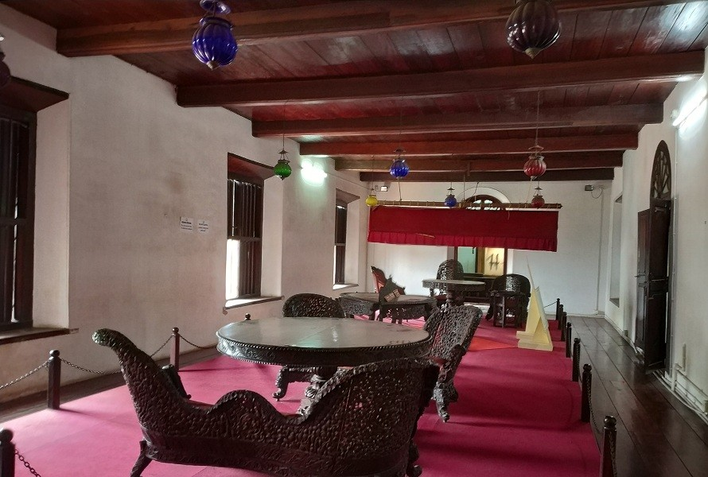
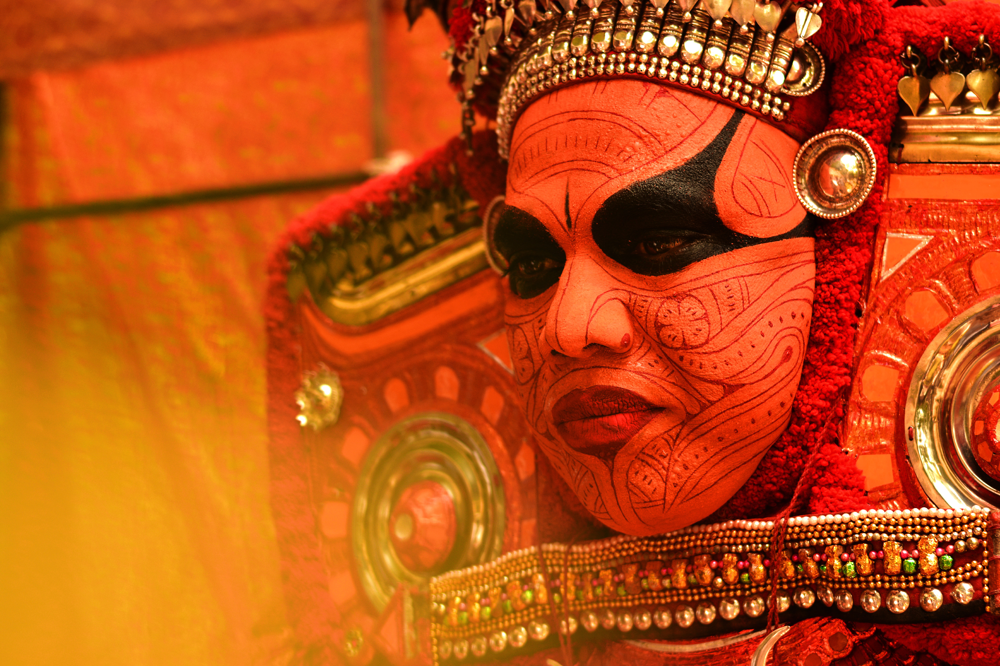

Major Tourist Attractions

Palakkayam Thattu
Palakkayam Thattu is a beautiful and well maintained hill station in Kannur. This lesser-known location is a misty mountain in the Western Ghats have an altitude of 3500 Ft from Mean Sea Level.

Arakkal Museum
The Arakkal Museum is a museum dedicated to the Arakkal family, the only Muslim royal family in Kerala, India.

Theyyam
Theyyam is a ritual art form used in Kerala to retell great stories using art forms. It originated in North Kerala and features dance, music and mime. It glorifies the beliefs of the ancient tribals who believed in the worship of legendary persons and the spirits of the ancestors.